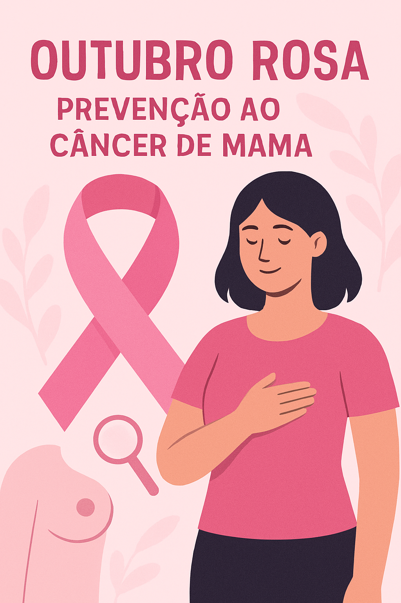

O câncer de mama não pode ser totalmente evitado, mas cerca de 30 % dos casos estão ligados ao estilo de vida e podem ser prevenidos com hábitos simples e saudáveis.
Praticar atividade física regularmente, manter o peso adequado, reduzir o consumo de álcool, alimentar-se bem e amamentar quando possível são atitudes que ajudam a diminuir o risco.
O mais importante, porém, é a detecção precoce. Quando descoberto no começo, a chance de cura chega a 95 %. Por isso, faça o autoexame todo mês a partir dos 20 anos, o exame clínico anual com o médico a partir dos 40 e a mamografia todo ano a partir dos 40 (ou antes, se houver casos na família).
Cuidar de si mesma não é egoísmo. É amor. E amor salva vidas.
